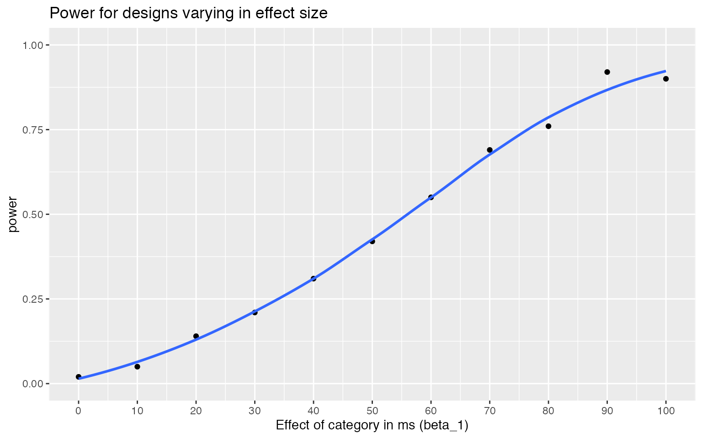
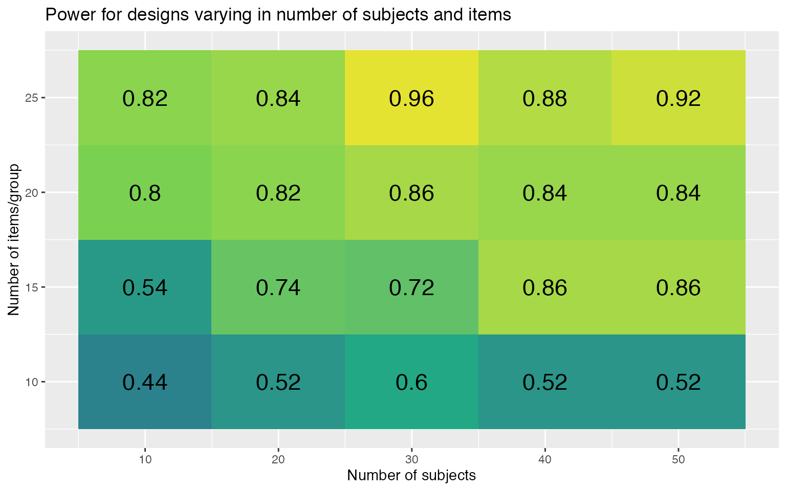
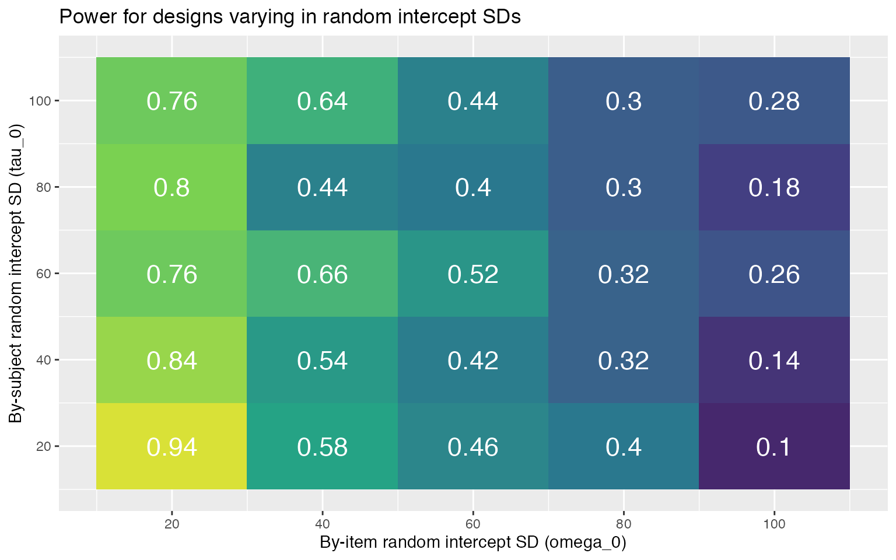

appendix1c_sensitivity.Rmd# load required packages library("lme4") # model specification / estimation library("lmerTest") # deriving p-values from lmer library("broom.mixed") # extracting data from model fits library("faux") # generate correlated values library("tidyverse") # data wrangling and visualisation # ensure this script returns the same results on each run set.seed(8675309) faux_options(verbose = FALSE)
# set up the custom data simulation function my_sim_data <- function( tau_n = 100, # number of subjects omega_n = 25, # number of items per category b0 = 800, # grand mean b1 = 50, # effect of category omega_0 = 80, # by-item random intercept sd tau_0 = 100, # by-subject random intercept sd tau_1 = 40, # by-subject random slope sd tau_r = 0.2, # correlation between intercept and slope sigma = 200 # residual (standard deviation) ) { # simulate a sample of items items <- data.frame( item_id = 1:(omega_n*2), category = rep(c("ingroup", "outgroup"), omega_n), O0i = rnorm(omega_n*2, 0, omega_0) ) # effect code category items$cat <- recode(items$category, "ingroup" = -0.5, "outgroup" = 0.5) # simulate a sample of subjects subjects <- faux::rnorm_multi( n = tau_n, mu = 0, sd = c(tau_0, tau_1), r = tau_r, varnames = c("T0s", "T1s") ) subjects$subj_id <- 1:tau_n # simulate trials dat_sim <- crossing(subj_id = subjects$subj_id, item_id = items$item_id) %>% mutate(sigma = rnorm(nrow(.), mean = 0, sd = sigma)) %>% inner_join(subjects, "subj_id") %>% inner_join(items, "item_id") %>% mutate(RT = b0 + O0i + T0s + (b1 + T1s) * cat + sigma) %>% select(subj_id, item_id, category, cat, RT) dat_sim }
The power calculation function is slightly more complicated than the one for the basic example. Since sensitivity analyses usually push analyses into parameter spaces where the models produce warnings, we’re capturing the warnings and adding them to the results table. We’re also adding the parameters to the results table so you can group by the different parameter options when visualising the results.
# set up the power function my_lmer_power <- function(filename = NULL, ...) { # ... is a shortcut that forwards any arguments to my_sim_data() dat_sim <- my_sim_data(...) # run lmer and capture any warnings ww <- "" suppressMessages(suppressWarnings( mod_sim <- withCallingHandlers({ lmer(RT ~ cat + (1 | item_id) + (1 + cat | subj_id), dat_sim, REML = FALSE)}, warning = function(w) { ww <<- w$message } ) )) # get results table and add rep number and any warnings sim_results <- broom.mixed::tidy(mod_sim) %>% mutate(warnings = ww) # add columns for the specified parameters params <- list(...) for (name in names(params)) { sim_results[name] <- params[name] } # append the results to a file if filename is set if (!is.null(filename)) { append <- file.exists(filename) # append if the file exists write_csv(sim_results, filename, append = append) } sim_results }
Set up a data table with all of the parameter combinations you want to test. For example, the code below sets up 100 replications for effects of category ranging from 0 to 100 ms in steps of 10. All of the other parameters are default, but we’re specifying them anyways so they are saved in the results table.
filename1 <- "sims/sens1.csv" nreps <- 100 # number of replications per parameter combo params <- crossing( rep = 1:nreps, tau_n = 100, # number of subjects omega_n = 25, # number of items b0 = 800, # grand mean b1 = seq(0, 100, by = 10), # effect of category omega_0 = 100, # by-item random intercept sd tau_0 = 80, # by-subject random intercept sd tau_1 = 40, # by-subject random slope sd tau_r = 0.2, # correlation between intercept and slope sigma = 200 # residual (standard deviation) ) %>% select(-rep) # remove rep column
This table has 1100 rows, so will run 1100 simulations below. The code below saves the results to a named file or appends them to the file if one exists already. Run a small number of replicates to start and add to it after you’re sure your code works and you have an idea how long it takes.
if (!file.exists(filename1)) { # run a simulation for each row of params # and save to a file on each rep sims1 <- purrr::pmap_df(params, my_lmer_power, filename = filename1) } # read saved simulation data # NB: col_types is set for warnings in case # the first 1000 rows don't have any ct <- cols(warnings = col_character()) sims1 <- read_csv(filename1, col_types = ct)
The chunk above will just read the saved data from the named file, if it exists. The code below calculates the mean estimates and power for each group. Make sure to set the group_by to the parameters you altered above.
# calculate mean estimates and power for specified alpha alpha <- 0.05 power1 <- sims1 %>% filter(effect == "fixed", term == "cat") %>% group_by(term, b1) %>% summarise( mean_estimate = mean(estimate), mean_se = mean(std.error), power = mean(p.value < alpha), .groups = "drop" ) power1 %>% ggplot(aes(b1, power)) + geom_point() + geom_smooth(se = FALSE) + ylim(0, 1) + scale_x_continuous(name = "Effect of category in ms (b1)", breaks = seq(0, 100, 10))

The code below sets up 50 replications for each of 20 combinations of 10 to 50 subjects (by steps of 10) and 10 to 25 stimuli (by steps of 5).
filename2 <- "sims/sens2.csv" nreps <- 50 # number of replications per parameter combo params <- crossing( rep = 1:nreps, tau_n = seq(10, 50, by = 10), omega_n = seq(10, 25, by = 5), b0 = 800, # grand mean b1 = 100, # effect of category omega_0 = 100, # by-item random intercept sd tau_0 = 80, # by-subject random intercept sd tau_1 = 40, # by-subject random slope sd tau_r = 0.2, # correlation between intercept and slope sigma = 200 # residual (standard deviation) ) %>% select(-rep) # remove rep column
if (!file.exists(filename2)) { # run a simulation for each row of params # and save to a file on each rep sims2 <- purrr::pmap_df(params, my_lmer_power, filename = filename2) } # read saved simulation data ct <- cols(warnings = col_character()) sims2 <- read_csv(filename2, col_types = ct)
# calculate mean estimates and power for specified alpha alpha <- 0.05 power2 <- sims2 %>% filter(effect == "fixed", term == "cat") %>% group_by(term, tau_n, omega_n) %>% summarise( mean_estimate = mean(estimate), mean_se = mean(std.error), power = mean(p.value < alpha), .groups = "drop" ) power2 %>% ggplot(aes(tau_n, omega_n, fill = power)) + geom_tile(show.legend = FALSE) + geom_text(aes(label = round(power, 2)), color = "white") + scale_x_continuous(name = "Number of subjects (nsubj)", breaks = seq(10, 50, 10)) + scale_y_continuous(name = "Number of items (nitem)", breaks = seq(5, 25, 5)) + scale_fill_viridis_c(limits = c(0, 1))

The code below sets up 50 replications for designs with 50 subjects, 10 items, and by-item and by-subject random intercept SDs ranging from 20 to 100 in steps of 20.
filename3 <- "sims/sens3.csv" nreps <- 50 # number of replications per parameter combo params <- crossing( rep = 1:nreps, tau_n = 50, # number of subjects omega_n = 10, # number of items b0 = 800, # grand mean b1 = 50, # effect of category omega_0 = seq(20, 100, by = 20), # by-item random intercept sd tau_0 = seq(20, 100, by = 20), # by-subject random intercept sd tau_1 = 40, # by-subject random slope sd tau_r = 0.2, # correlation between intercept and slope sigma = 200 # residual (standard deviation) ) %>% select(-rep) # remove rep column
if (!file.exists(filename3)) { # run a simulation for each row of params # and save to a file on each rep sims3 <- purrr::pmap_df(params, my_lmer_power, filename = filename3) } # read saved simulation data ct <- cols(warnings = col_character()) sims3 <- read_csv(filename3, col_types = ct)
# calculate mean estimates and power for specified alpha alpha <- 0.05 power3 <- sims3 %>% filter(effect == "fixed", term == "cat") %>% group_by(term, omega_0, tau_0) %>% summarise( mean_estimate = mean(estimate), mean_se = mean(std.error), power = mean(p.value < alpha), .groups = "drop" ) power3 %>% ggplot(aes(omega_0, tau_0, fill = power)) + geom_tile(show.legend = FALSE) + geom_text(aes(label = round(power, 2)), color = "white") + scale_x_continuous(name = "By-item random intercept SD (omega_0)", breaks = seq(20, 100, 20)) + scale_y_continuous(name = "By-subject random intercept SD (tau_0)", breaks = seq(20, 100, 20)) + scale_fill_viridis_c(limits = c(0, 1))
